French Walnut Armoire
2025Two-door armoire with rebuilt cornice and re-polished panels.
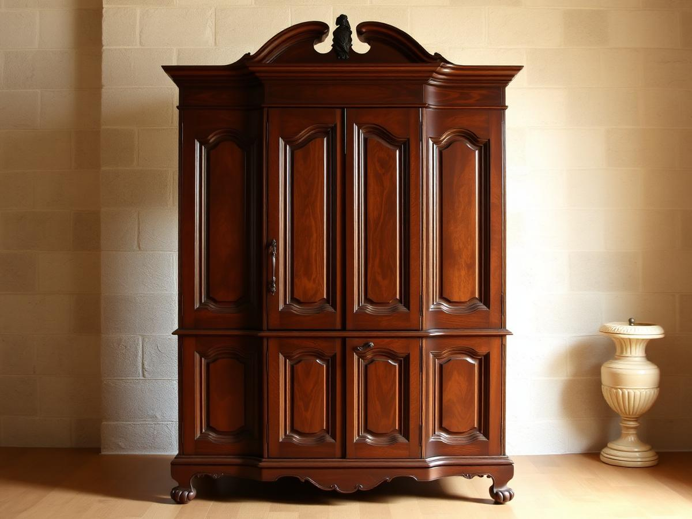
Real pieces, real timelines. Filter by discipline, or drag through the before-and-after pairs below.
13 projects
Two-door armoire with rebuilt cornice and re-polished panels.
Every spindle re-seated and the frame refinished in oil.
Table and six chairs stripped, repaired and re-oiled.
Conservation of the fall front, interior and original brasses.
Hand-tied springs and new velvet over a repaired frame.
Painted in a heritage sage with new hand-forged hardware.
Missing gesso rebuilt and the frame re-gilded in leaf.
Built from reclaimed hardwood to fit a narrow entryway.
Sun-bleached teak brought back with careful colour work.
Shelf sag corrected and the whole case french polished.
Frame rebuilt and buttoned in heavyweight natural linen.
Structural repair of the trunk with a new plinth section.
Nothing in that category yet.
Drag each handle to compare the piece as it arrived with the piece as it left.
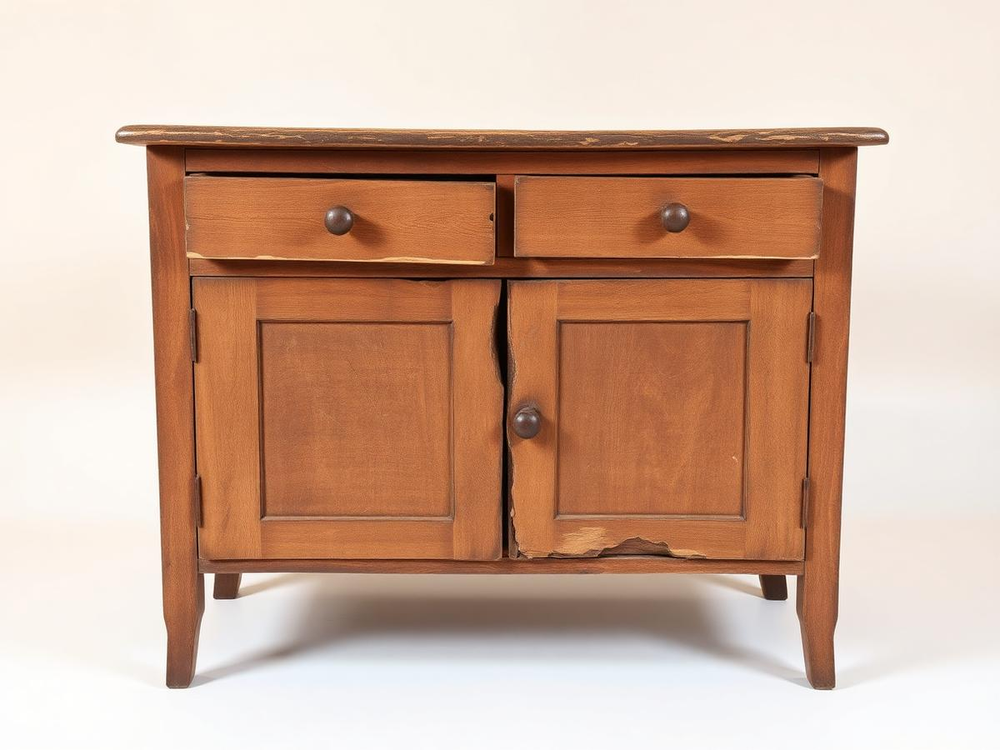
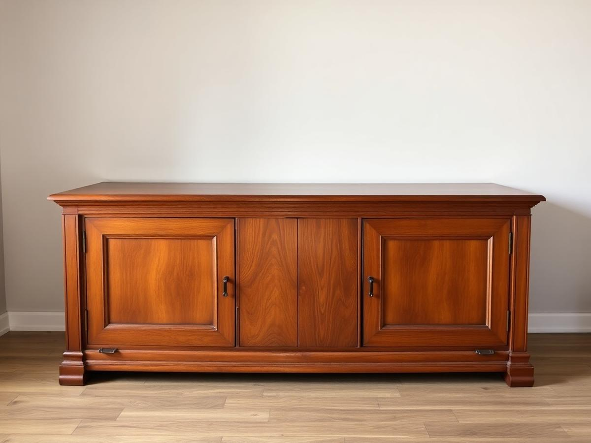
Before After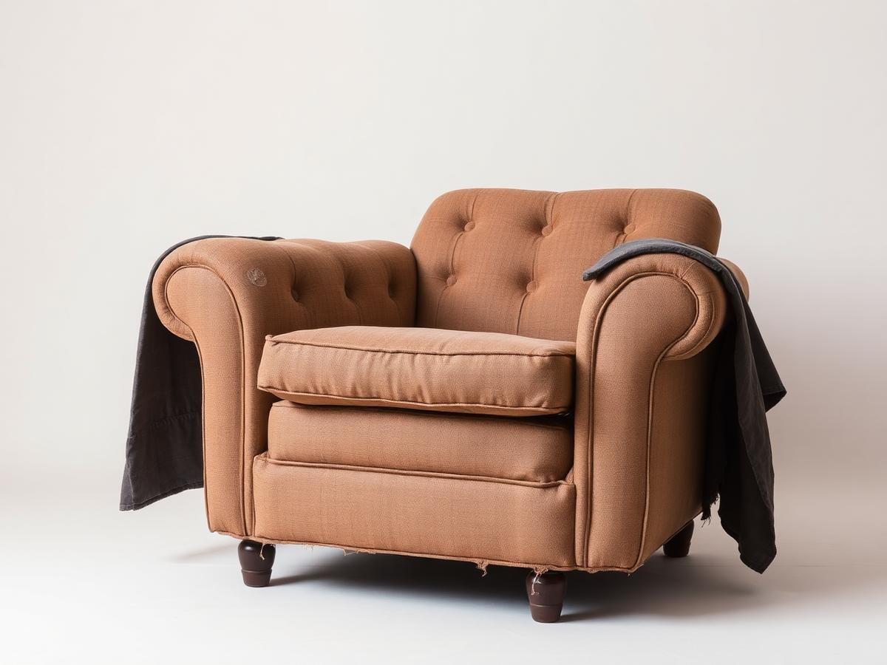
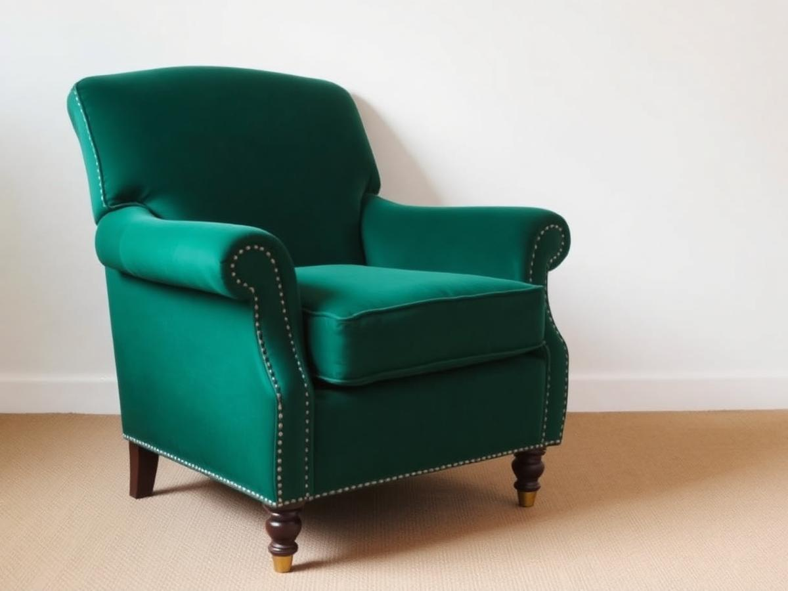
Before After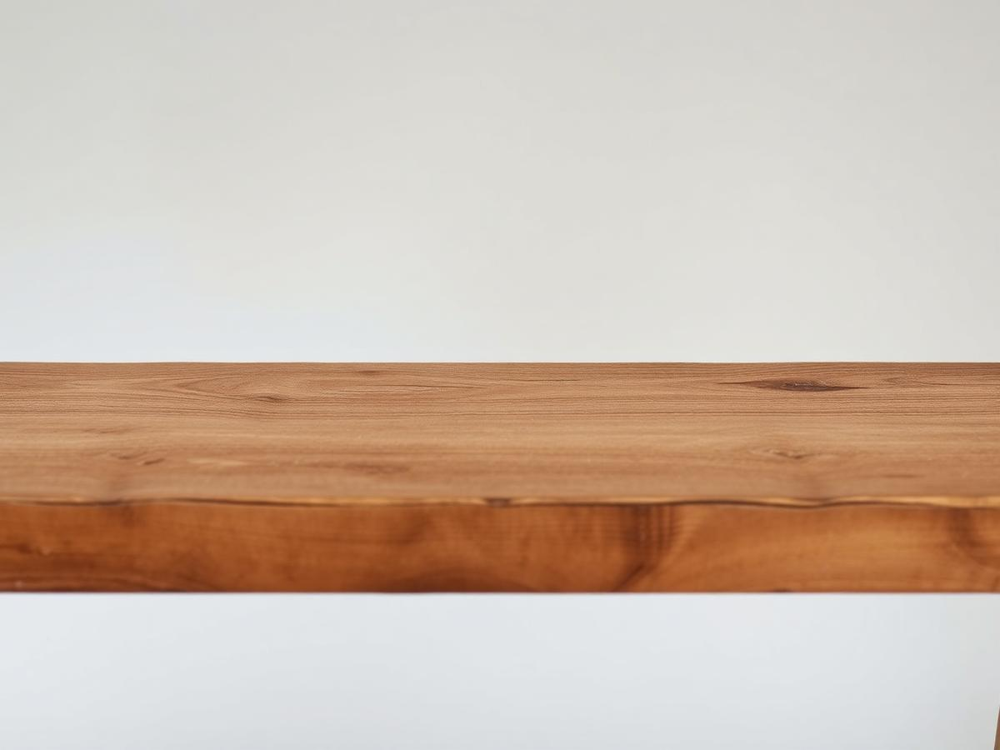
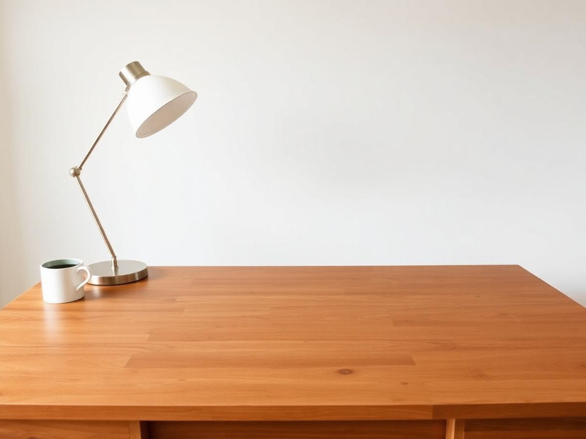
Before After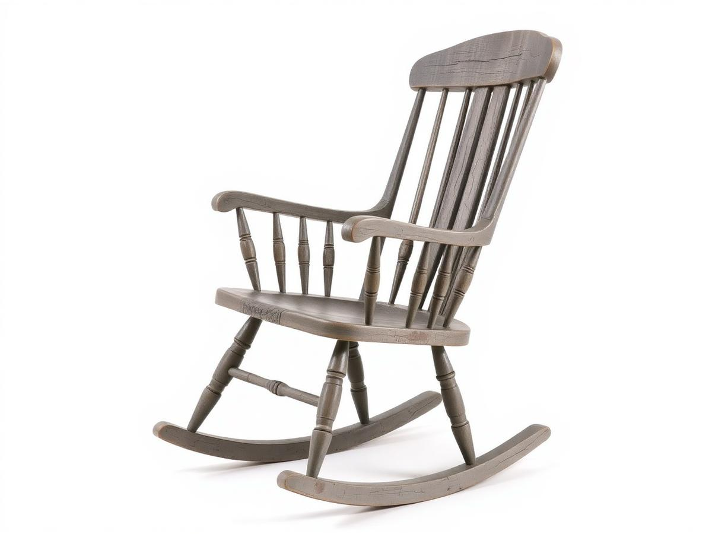
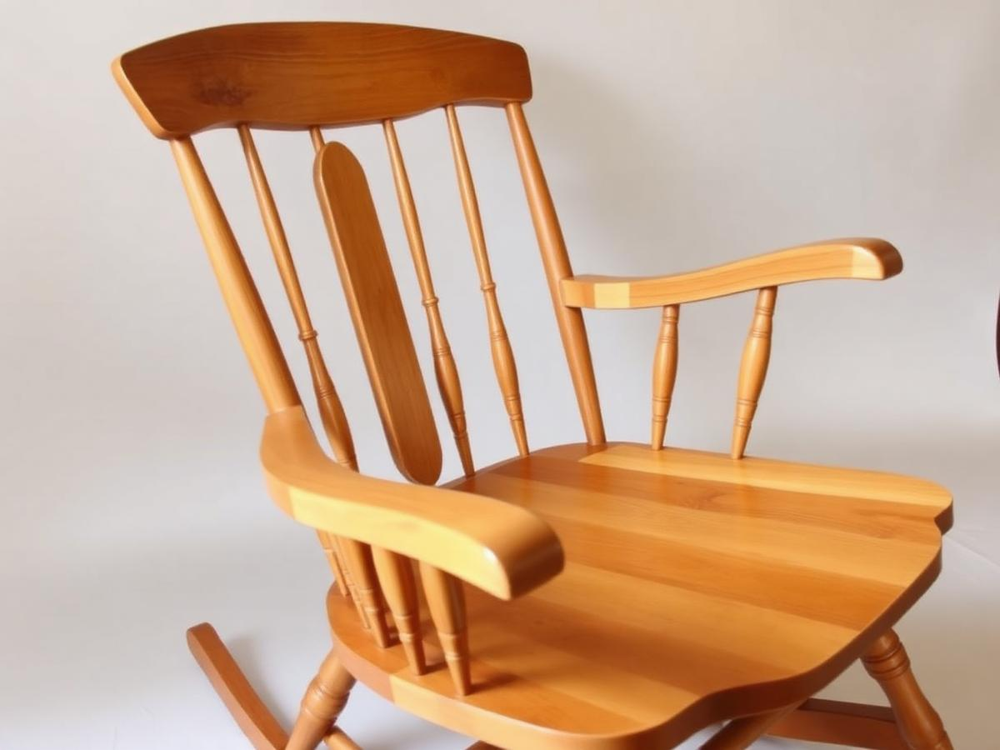
Before After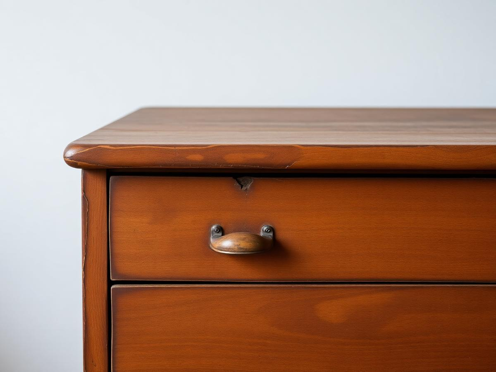
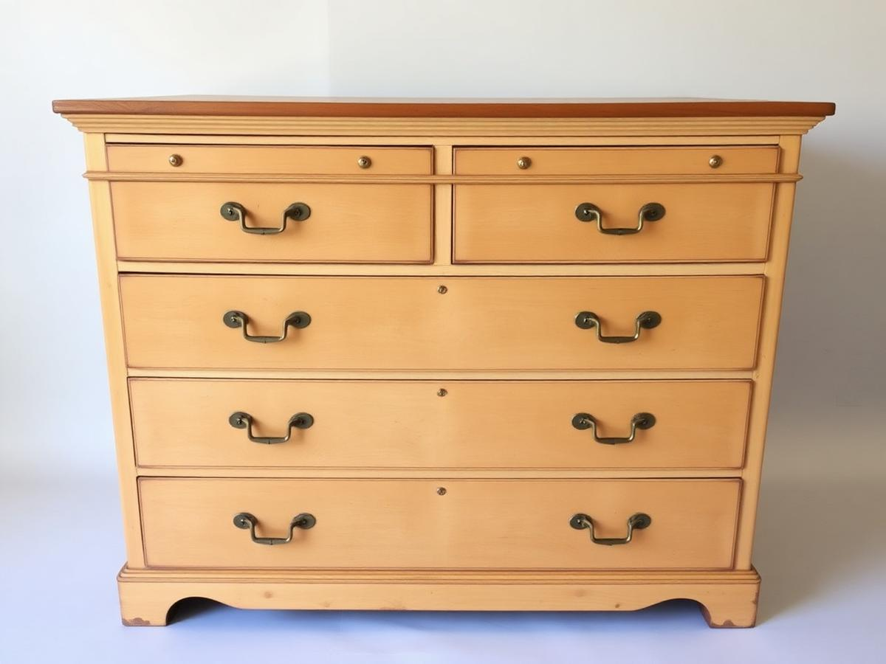
Before After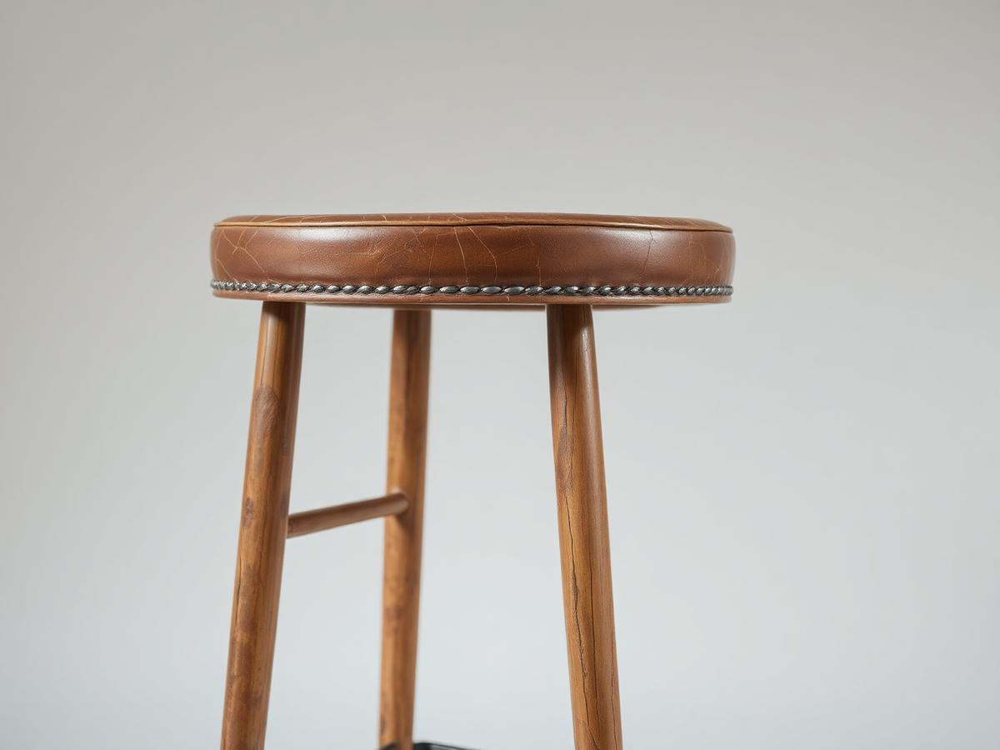
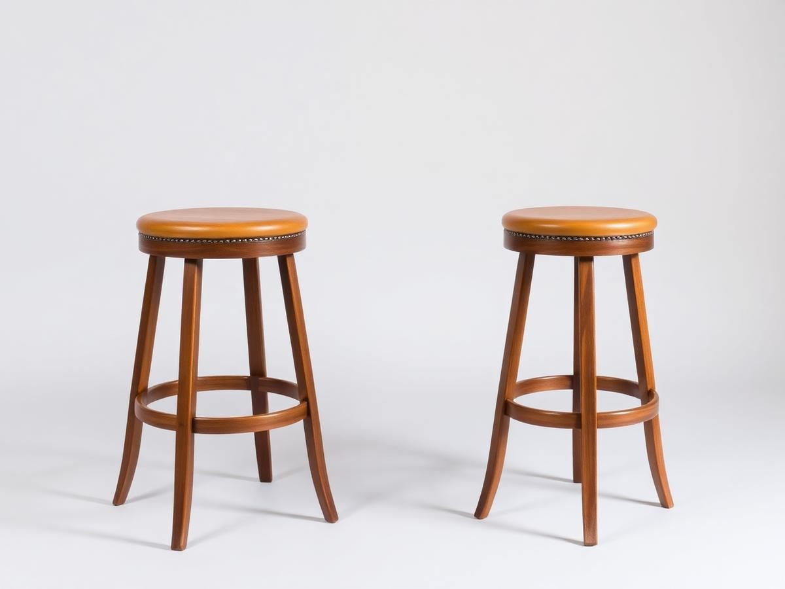
Before AfterSend photographs and we'll come back with an honest assessment, a fixed price and a realistic date.